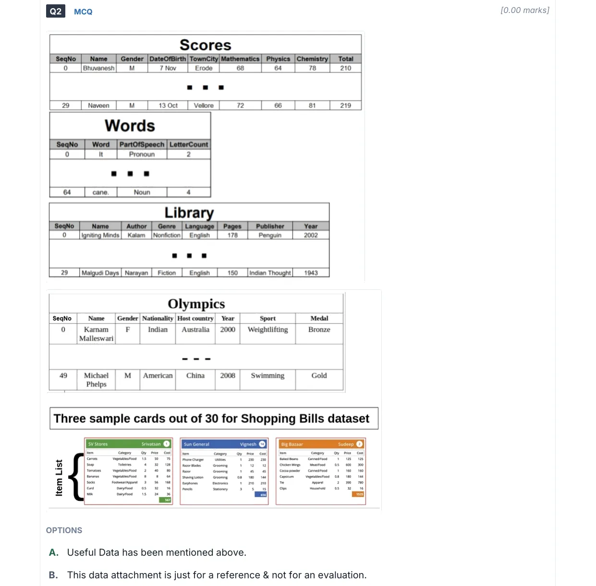

The five datasets CT pseudocode questions run over, transcribed from the reference sheet printed with the paper (2022 Aug, Q2). The paper prints only the first and last row of each table — the rows in between are never shown, so no question can turn on a specific hidden value. What the sheet gives you is the shape: column names, their order, the row count, and how the derived columns are computed. That is what the pseudocode is written against. Open this in a second window while you solve.
Pseudocode questions name a table and loop over its rows. Before tracing, fix three things off this sheet: which columns exist (a condition on a column the table does not have is a giveaway distractor), how many rows the loop runs for, and which columns are derived — Total, LetterCount and Cost are computed from other columns, so a question can ask about them without ever showing you a value.
Row counts matter for the counting questions: Scores and Library are 30 rows, Words is 65, Olympics is 50, Shopping Bills is 30 cards. Nested pairwise loops over these run n² or n(n−1)/2 comparisons — that is usually what the answer options are counting.
Scores
30 rows · SeqNo 0–299 columnsone row per student
SeqNo
Name
Gender
DateOfBirth
TownCity
Mathematics
Physics
Chemistry
Total
0
Bhuvanesh
M
7 Nov
Erode
68
64
78
210
▪▪▪
29
Naveen
M
13 Oct
Vellore
72
66
81
219
Total is derived: Mathematics + Physics + Chemistry. It holds on both printed rows (68+64+78 = 210, 72+66+81 = 219), so treat it as the row sum rather than a fourth subject.
DateOfBirth is day and month only — no year. Questions can compare birth months, not ages.
Gender is a single letter, M / F. TownCity is a Tamil Nadu town name, repeated across students — which is what makes the “same city” pairwise questions non-trivial.
Questions in your set that use it
Words
65 rows · SeqNo 0–644 columnsone row per word, in reading order
SeqNo
Word
PartOfSpeech
LetterCount
0
It
Pronoun
2
▪▪▪
64
cane.
Noun
4
The rows are a passage split into words, in order — not a dictionary. Sentence boundaries are carried by punctuation stuck to the word: the last row is cane. with the full stop attached. That is how the “per sentence” pseudocode detects a sentence end.
LetterCount counts letters, not characters: cane. is 5 characters but LetterCount is 4, so the trailing punctuation is excluded.
PartOfSpeech is a word-class label (Pronoun, Noun, Adjective, Verb, …) — the column the noun-counting and adjective-excluding questions filter on.
Questions in your set that use it
Library
30 rows · SeqNo 0–298 columnsone row per book
SeqNo
Name
Author
Genre
Language
Pages
Publisher
Year
0
Igniting Minds
Kalam
Nonfiction
English
178
Penguin
2002
▪▪▪
29
Malgudi Days
Narayan
Fiction
English
150
Indian Thought
1943
Name is the book title, not a person — the author is its own column. Both printed rows use a surname only for Author (Kalam, Narayan).
Genre is Fiction / Nonfiction, Language is English or another language. The classic filter here is an OR over two of these, then the complement (count − A).
Year is the year of publication, four digits — the column the “latest year per author” dictionary questions maximise over.
Questions in your set that use it
Olympics
50 rows · SeqNo 0–498 columnsone row per medal won
SeqNo
Name
Gender
Nationality
Host country
Year
Sport
Medal
0
Karnam Malleswari
F
Indian
Australia
2000
Weightlifting
Bronze
▪▪▪
49
Michael Phelps
M
American
China
2008
Swimming
Gold
A row is a medal, not an athlete. The same athlete appears on several rows (Phelps most of all), which is exactly what the nested-loop “duplicate athlete entries” question counts.
Nationality is an adjective (Indian, American), not a country name. Host country is the country the games were held in — a different column from the athlete's own.
Medal is Gold / Silver / Bronze; Year is the games year, so Year and Host country move together.
Questions in your set that use it
Shopping Bills
30 cards5 columns per itemthree sample cards printed out of 30
Not a flat table — a list of 30 bill cards, each with a shop, a customer, a bill number, and its own item list. So the loops here are two-level: over bills, then over the items inside a bill. These three are the only cards the paper prints.
SV StoresSrivatsan1
Item
Category
Qty
Price
Cost
Carrots
Vegetables/Food
1.5
50
75
Soap
Toiletries
4
32
128
Tomatoes
Vegetables/Food
2
40
80
Bananas
Vegetables/Food
8
8
64
Socks
Footwear/Apparel
3
56
168
Curd
Dairy/Food
0.5
32
16
Milk
Dairy/Food
1.5
24
36
Bill total
567
Sun GeneralVignesh14
Item
Category
Qty
Price
Cost
Phone Charger
Utilities
1
230
230
Razor Blades
Grooming
1
12
12
Razor
Grooming
1
45
45
Shaving Lotion
Grooming
0.8
180
144
Earphones
Electronics
1
210
210
Pencils
Stationery
3
5
15
Bill total
656
Big BazaarSudeep2
Item
Category
Qty
Price
Cost
Baked Beans
Canned/Food
1
125
125
Chicken Wings
Meat/Food
0.5
600
300
Cocoa powder
Canned/Food
1
160
160
Capsicum
Vegetables/Food
0.8
180
144
Tie
Apparel
2
390
780
Clips
Household
0.5
32
16
Bill total
1525
Cost is derived: Qty × Price, and the bill total is the sum of Cost. Both hold on all three printed cards (567, 656, 1525), so you can reconstruct any figure a question withholds.
Qty is not always an integer — 1.5 kg of carrots, 0.8 of shaving lotion. Anything that assumes a whole count is wrong.
A bill carries a shop, a customer and a bill number; a customer can hold more than one bill, which is what the “most bills issued to one customer” nested loops are grouping on. Categories are slash-joined labels (Vegetables/Food, Dairy/Food) — several distinct categories end in /Food, so a “food” filter is a substring test, not an equality test.
Questions in your set that use it
Show the sheet exactly as printed in the paper (2022 Aug, Q2)

Cropped from the original paper. Everything above is transcribed from this scan — if a glyph looks doubtful, this is the source of truth.